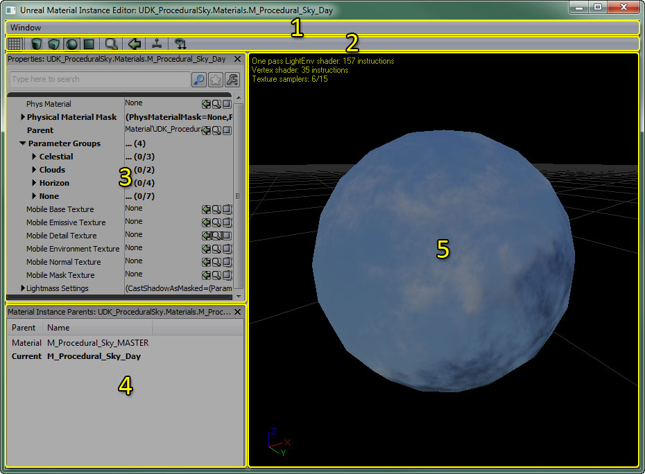
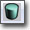
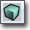
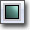
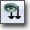
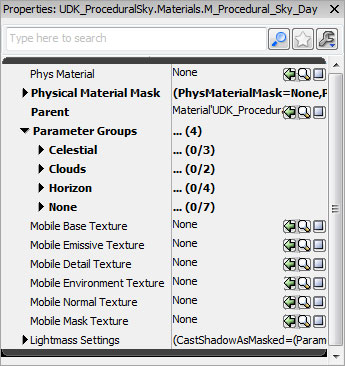
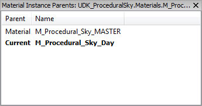
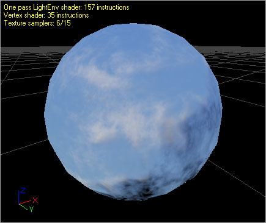
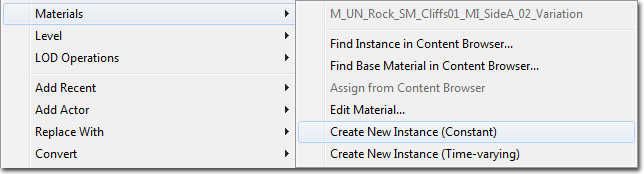
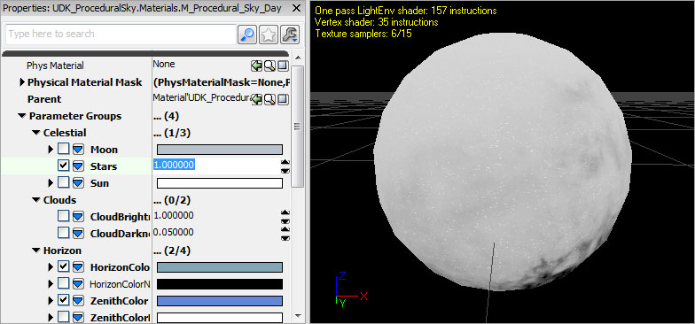

UDN
Search public documentation:
MaterialInstanceEditorUserGuideKR
English Translation
日本語訳
中国翻译
Interested in the Unreal Engine?
Visit the Unreal Technology site.
Looking for jobs and company info?
Check out the Epic games site.
Questions about support via UDN?
Contact the UDN Staff
日本語訳
中国翻译
Interested in the Unreal Engine?
Visit the Unreal Technology site.
Looking for jobs and company info?
Check out the Epic games site.
Questions about support via UDN?
Contact the UDN Staff
머티리얼 인스턴스 에디터 사용 안내서
문서 변경내역: Amitt Mahajan 작성. Richard Nalezynski, Jeff Wilson 업데이트. 홍성진 번역.
소개
머티리얼 인스턴스 에디터 열기
머티리얼 인스턴스 에디터 인터페이스

- 메뉴바
- 툴바
- 프로퍼티 패널 - 머티리얼 인스턴스의 프로퍼티입니다.
- 부모 목록 - 현재 머티리얼 인스턴스에 대한 부모 체인 목록입니다.
- 미리보기 패널 - 현재 머티리얼 인스턴스를 미리봅니다.
메뉴바
창
- Properties (프로퍼티) - 프로퍼티 패널 표시를 토글합니다.
- Material Instance Parents (머티리얼 인스턴스 부모) - 부모 목록 표시를 토글합니다.
툴바
| 아이콘 | 설명 |
|---|---|
 | 머티리얼 인스턴스 미리보기 패널에 배경 그리드 표시를 토글합니다. |
|    | 머티리얼 인스턴스를 어느 표준 모양에서 미리볼지 선택합니다. |
 | 콘텐츠 브라우저를 열고 해당 머티리얼 인스턴스를 선택합니다. |
| 콘텐츠 브라우저에서 스태틱 메시를 선택하고서 이 버튼을 누르면 선택된 메시를 미리보기 메시로 만듭니다. | |
 | 켜면 실시간으로 미리보기 메시의 머티리얼을 업데이트합니다. 에디터 성능을 위해서는 이 옵션을 끄시기 바랍니다. |
|  | 부모 머티리얼 내의 모든 머티리얼 파라미터를 프로퍼티 패널에 보이게 만듭니다. |
프로퍼티 패널

머티리얼 인스턴스 에디터의 프로퍼티 창은 모든 '작업'이 벌어지는 곳입니다. 프로퍼티 창을 통해 머티리얼 인스턴스 파라미터를 덮어쓰고 변경할 수 있습니다. 이 머티리얼 인스턴스에 대한 부모 머티리얼에 존재하는 각 파라미터는, 부모 머티리얼의 파라미터에 할당된 그룹 아래 Parameter Groups 배열에 나열되어 있습니다. 디폴트로는 부모 파라미터 값 중 어느 것도 덮어쓰지 않습니다. 파라미터에 추가로 피지컬 머티리얼과 피지컬 머티리얼 마스크 프로퍼티는 프로퍼티 패널 은 물론 여러가지 모바일 전용 프로퍼티나 라이트매스 세팅에도 할당 가능합니다.부모 목록

머티리얼 인스턴스는 다른 머티리얼 인스턴스를 부모로 가질 수도 있기 때문에, 가끔 어떤 머티리얼 인스턴스의 기반이 되는 원본 머티리얼을 찾아내기가 어려울 때가 있습니다. 부모 목록은 현재 머티리얼 인스턴스의 부모 체인을 그 시작점이 되는 루트 머티리얼까지 거슬러올라가며 표시해 주어 그런 문제를 해결합니다. 예를 들어, 위의 부모 목록에는 "TestMaterial_INST"라는 머티리얼 인스턴스를 부모로 갖는 "TestMaterial_INST_INST"라는 머티리얼 인스턴스가 표시되어 있습니다. 부모 목록에서 보면 "TestMaterial_INST"의 부모는 "TestMaterial"임을 알 수 있습니다. 현재 편집중인 인스턴스는 두껍게 표시됩니다. 게다가 부모 목록에 있는 아이템을 더블클릭하면, 해당 부모가 에디터에 로드됩니다. 부모 아이템에 우클릭하고 "Sync Generic Browser"(일반 브라우저에서 찾기)를 선택하면 부모의 위치를 일반 브라우저에서 확인할 수 있습니다.미리보기 패널

머티리얼 미리보기 패널에는 편집중인 머티리얼이 메시에 적용되어 나타납니다. 메시를 왼쪽 버튼으로 끌어서 회전, 가운데 버튼으로 끌어서 패닝, 오른쪽 버튼으로 끌어서 줌이 가능합니다. 빛의 방향은 L키를 누르고 왼쪽 마우스 버튼으로 끌어서 회전시킬 수 있습니다. 미리보기 메시는 관련된 툴바 콘트롤(모양 버튼, "미리보기 메시 선택" 콤보, "선택된 스태틱 메시 사용" 버튼 등)을 사용하여 바꿀 수 있습니다. 미리보기 메시는 머티리얼에 저장되므로 다음번에 머티리얼 에디터에서 열었을 때 같은 메시에 미리볼 수 있게 되어 있습니다. 머티리얼 인스턴스 에디터의 미리보기 패널은 다양한 쉐이더 유형에 대한 명령 수는 물론 해당 머티리얼에 의해 사용되고 있는 텍스처 샘플 수와 같은, 머티리얼에 대한 통계도 표시됩니다.인스턴스 만들기

파라미터 덮어쓰기

작업방식
아티스트 작업방식
아티스트가 이 에디터를 사용하는 데 있어 가장 일반적인 경우는 이와 같을 겁니다:- 아티스트가 외형 변경용 파라미터를 가진 머티리얼을 새로 만듭니다.
- 아티스트가 일반 브라우저에 오른클릭하여 패키지 내에 머티리얼 인스턴스 불변을 새로 만듭니다.
- 아티스트가 이전에 만든 머티리얼을 새로 만든 머티리얼 인스턴스 불변의 부모로 할당합니다.
- 아티스트가 머티리얼의 모양새를 바꾸기 위해 머티리얼 인스턴스 파라미터를 변경합니다.
- 아티스트와 렙디가 에디터 전반에 걸쳐 새로 만든 머티리얼 인스턴스 불변을 사용할 수 있게 되었습니다.
레벨 디자이너 작업방식
렙디가 이 에디터를 사용하는 데 있어 가장 일반적인 경우는 이와 같을 겁니다:- 아티스트가 외형 변경용 파라미터를 가진 머티리얼을 새로 만듭니다.
- 렙디가 레벨에다 그 머티리얼을 놓습니다.
- 렙디가 머티리얼을 미세조정해야겠다 싶어서, 액터에 오른클릭하고 위에 설명한 메뉴 옵션을 사용하여 머티리얼 인스턴스를 새로 만듭니다.
- 렙디가 대체하려는 인스턴스 파라미터 옆의 박스를 체크하고 머티리얼의 모양새를 변경합니다.
- (옵션) 이런 식으로 만든 머티리얼 인스턴스는 레벨 패키지에 저장되어 있기에, 렙디의 재량껏 다른 액터에 대해 생성된 머티리얼 인스턴스를 적용할 수도 있습니다. 머티리얼 인스턴스는 일반 브라우저의 레벨 패키지에 나타나게 됩니다.